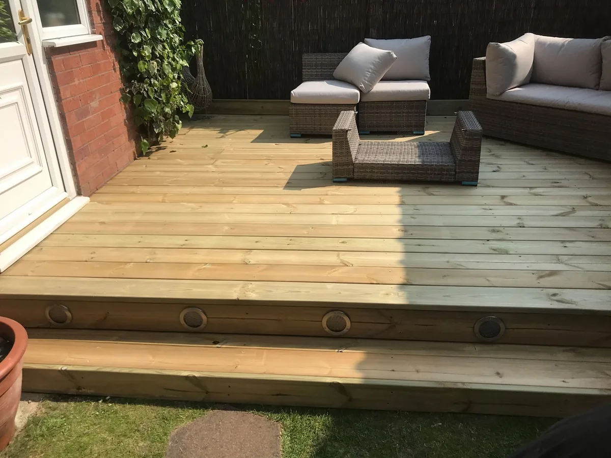

Outdoor living
Premium Decking

Garden decking can create a practical space for seating, dining and entertaining, especially in gardens with uneven ground or changing levels. We install decking to suit the shape and layout of your outdoor space.
We carefully prepare the base and frame before fitting the decking boards, steps and edges. The result is a strong, safe and attractive deck designed for everyday use and built to last.